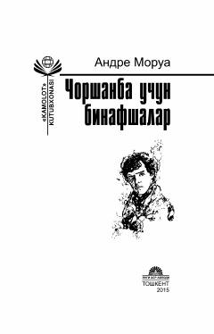

CUAndre Moruaning o'zbek tilidagi ilk hikoyalar to'plami.
Ushbu kitob mashhur fransuz yozuvchisi Andre Moruaning o'zbek tiliga tarjima qilingan ilk hikoyalar to'plamidir. Asarda yozuvchining turli yillarda yozilgan, insoniy tuyg'ular va hayotiy falsafani qamrab olgan sara hikoyalari jamlangan.